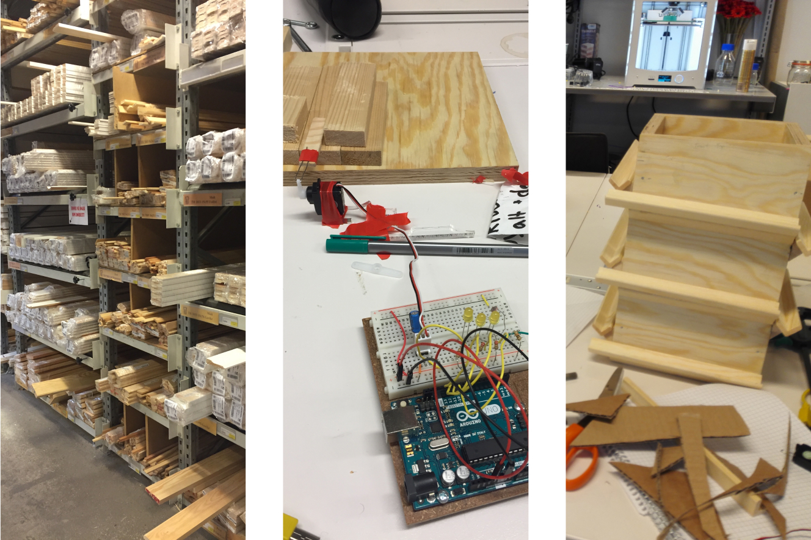
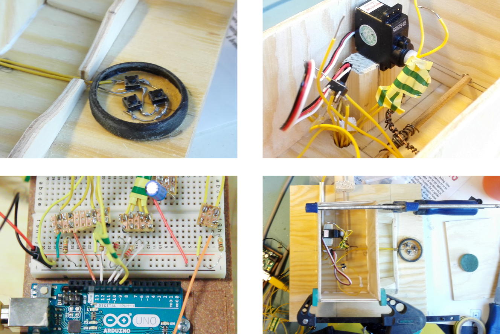
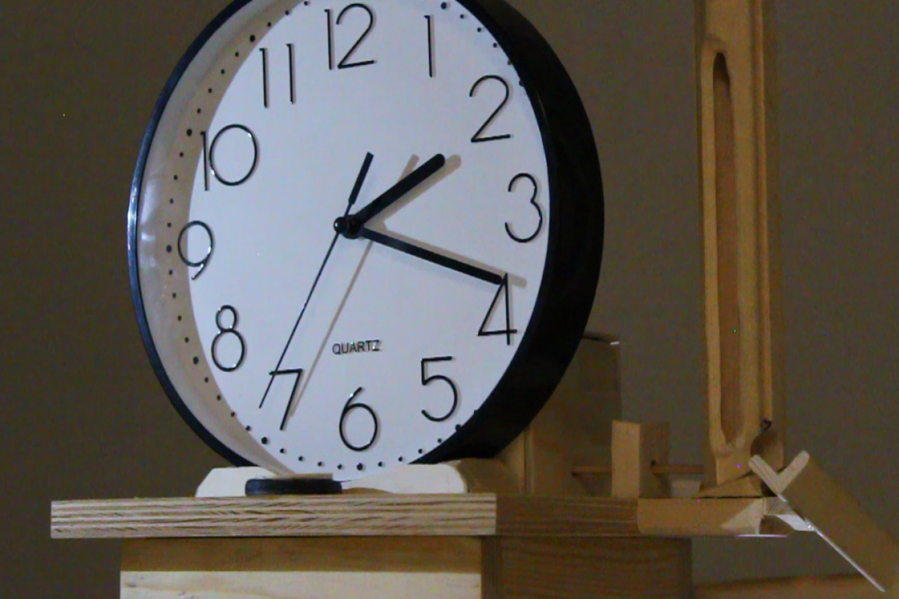
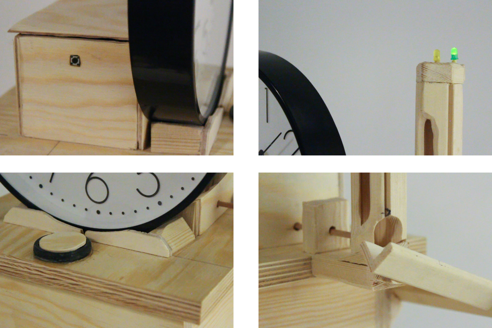
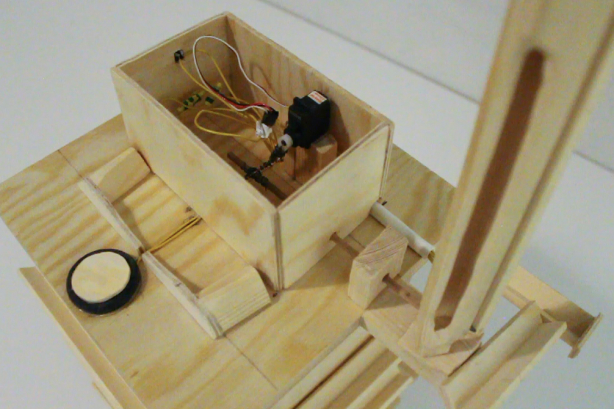
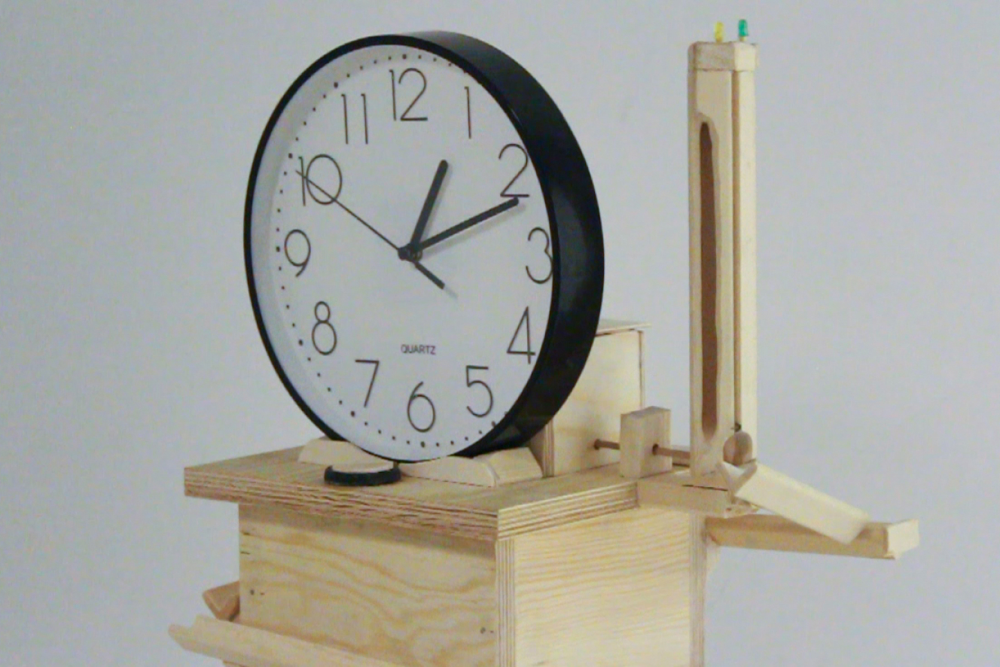

Marble track clock tower
The desktop sized marble track clock tower.
University of Oslo · 2016 · Tangible Interaction Design
This desktop sized clock tower is meant as a countdown clock using physical marbles to display elapsed time. Each marble represents five minutes. A user can load the magazine with a desired amount of marbles and start the countdown by pressing the start-button. Each time five minutes passes, a marble is ejected from the marble-magazine and starts rolling down the wooden tracks, stopping at an easily seen wooden track at the front bottom of the clock tower.
This clock tower was created as part of a school project, where the task was to choose a target group, find a problem they had, and try to solve it with tangible interaction design. Our target group was children at a kindergarten, were we were told that one of their learning objectives was to get a better understanding of time.
I worked on designing, constructing and programming the marble clock tower. We started the design process by brainstorming and GIGA-mapping, exploring different solutions for that could give the target group a better understanding of time.
We all agreed that marble tracks are fun and interesting, and we successfully tested this idea with the children using an initial prototype. We understood that it had to be robust enough to survive curious children, but as this is a challenging task, we settled on a solution that could be placed out of reach from the children, but still be interesting visually and audibly with the marbles making pleasant sounds as they roll from one wooden track to the next.
With the solution settled, we begun constructing the tower using thick sturdy wooden parts. The magazine at the top uses a light sensor that, after completing an initial start-up calibration, senses when a marble a placed in the magazine. The Arduino, placed inside the tower, ejects the marbles in five minute intervals using a servo motor. The clock is not connected to the Arduino and is just there in order for the children to get a relationship with tradional clocks, and compare marble-time with actual-time.
Tangible Interaction Design, Arduino, brainstorming, GIGA-mapping, user testing and interviews.
Some inital sketches.
Images from the build process.
The Arduino and the components that make it work.
A close up of the clock.
Detail view of the different parts.
The tower without the clock, showing the servo motor that ejects the marbles.
A close up presentation of the marble track clock tower.
jakobk@jakobk.no